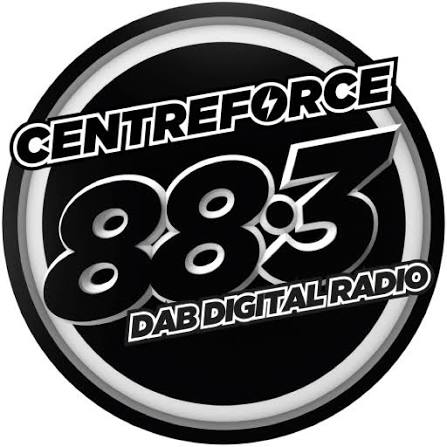
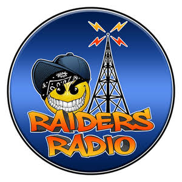

Live streams from the global underground
Hardcore, breakbeat, and proper underground vibes.

Old‑skool, house, and rave classics from the original pirates.
Garage, jungle, grime, and cutting‑edge underground music.

Jungle, hardcore, and pirate‑style rave energy.